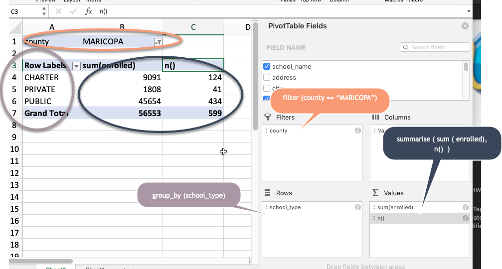

4 A quick tour of verbs
4.1 Key takeaways
- Verbs are functions; nouns are variables or objects.
- Do one thing at a time using the “and then” operator (
%>%). - You only really need a few verbs to get a lot done:
select,filter,arrange: Pick out and sort specific itemsgroup_by,summarise: count and sum by categorymutate: create new columns with formulas
- You’ve probably done most of this before in Excel
- These are similar to other database languages such as SQL.
This chapter will go through the very basics of each verb. Subsequent chapters will go into more detail on how to make them work in a variety of circumstances.
Data for this walkthrough
All of these sections will be based on the 2017-2018 Arizona immunization data. The data was downloaded from the Arizona Department of Health. The link for “Arizona Reporting Schools Coverage” under each year is the Excel file.
The following changes were made to the original file:
- Remove any specific immunizations other than MMR, for measles
- Remove schools with under 20 students, for which the state did not report any data individually. It accounted for 113 schools, or about 10 percent of the schools. Estimating all of those schools at their maximum possible (19), it would account for about 2.5 percent of the students.
- Estimate the number of children in each category by multiplying the percentage by the enrollment. There is room for rounding error in this.
| Variable name | Type | Description |
|---|---|---|
| school_name | chr | upper case |
| address | chr | upper case |
| city | chr | upper case |
| zip_code | chr | 5-digit zip code, leading 0 if needed |
| school_nurse | chr | “YES”/“NO” |
| school_type | chr | “PUBLIC” / “CHARTER” / “PRIVATE” |
| enrolled | num | 6th grade enrollment |
| num_immune_mmr | num | # of immunized students for measles |
| num_exempt_mmr | num | # of student exempt from requirement for measles |
| num_compliance_mmr | num | total of immune + exempt (in compliance with rules) |
| num_pbe | num | # with personal believe exempt. for at least 1 immunization |
| num_medical_exempt | num | # who have a medical exemption for at least 1 immunization |
| num_pbe_exempt_all | num | # who have personal believe exemption for every shot |
Note: It seems that some students who could be exempt from mmr get it anyway – there are cases in which there are larger numbers with pbe exemptions for all immunizations than the number with mmr exemptions.
4.1.1 Follow along
To follow along with this tutorial, download this R dataset, put it in your project folder (or upload to your rstudio.cloud project) and include the following code chunk. You may need to install “DT” and “scales” if you haven’t already :
## ── Attaching packages ──────────────────────────────────────────────────────────────────────────── tidyverse 1.3.0 ──## ✓ ggplot2 3.2.1 ✓ purrr 0.3.3
## ✓ tibble 2.1.3 ✓ dplyr 0.8.4
## ✓ tidyr 1.0.2 ✓ stringr 1.4.0
## ✓ readr 1.3.1 ✓ forcats 0.4.0## ── Conflicts ─────────────────────────────────────────────────────────────────────────────── tidyverse_conflicts() ──
## x dplyr::filter() masks stats::filter()
## x dplyr::lag() masks stats::lag()##
## Attaching package: 'scales'## The following object is masked from 'package:purrr':
##
## discard## The following object is masked from 'package:readr':
##
## col_factor#this loads a pre-created R data file. Note that here, it's saved in a subfolder called "data".
# You'll need to remove that folder path if you saved it elsewhere.
load(file="data/az-immunizations-grade6.Rda")
# this suppresses scientific notation.
options(scipen=999, digits=7)Possible errors:
Some variation of “file not found”: Look at the path to the file name. If your data isn’t saved there, it won’t be found. Another possibility is that you have opened your R Markdown file as a file, not created it as part of a project, so the default path is wrong.
Some variation of “object” or “package” not found: You may have to install some of these packages before you can invoke them.
The %>% operator: … and then…
The tidyverse encourages you to do your work one step at a time. Instead of packing everything into one command, stack them by saying “start here, and then.. and then .. etc.”
grade6_counts %>% # start with the data frame, AND THEN...
select (school_name) %>% # pick out the school name only AND THEN ...
arrange (school_name) # put them in alphabetical order4.2 Looking at your data in pieces and in order
4.2.1 select to pick out columns
In Excel, there was no easy way to filter data vertically. We could only filter rows. The select verb picks out specific columns. Rename them at the same time by putting the new name on the left side of an equal sign:
| school | county | enrolled |
|---|---|---|
| ABRAHAM LINCOLN TRADITIONAL SCHOOL | MARICOPA | 59 |
| ACACIA ELEMENTARY SCHOOL | MARICOPA | 134 |
| ACADEMY DEL SOL - HOPE | PIMA | 53 |
4.2.2 arrange to sort
In Excel, the “Sort” menu item is used to arrange data alphabetically or in numeric order. That’s confusing, because “sorting” can be construed a lot of different ways. For instance, you might “sort” M&Ms into their colors.
But in R, the verb is “arrange”, which is much clearer conceptually. The arrange verb puts the rows in order based on the column or columns you specify.
This arranges the data from the highest to lowest enrollment by using the desc indicator. You can have more than one column, which takes over when there’s a tie.
grade6_counts %>%
select ( school = school_name,
county,
enrolled) %>%
arrange ( desc(enrolled)) %>%
head(3)| school | county | enrolled |
|---|---|---|
| MARC T ATKINSON MIDDLE SCHOOL | MARICOPA | 422 |
| ESTRELLA MIDDLE SCHOOL | MARICOPA | 406 |
| KYRENE APRENDE MIDDLE SCHOOL | MARICOPA | 364 |
4.2.3 filter to pick out rows
This is one place where the Excel terminology carries over to R. There is a whole chapter on filtering – it can get quite sophisticated – but just remember that it is much more picky than you’re accustomed to. The computer sees MARICOPA as a completely different word than Maricopa, for example.
Use two equals sign to test for a match (==) : and they have to match exactly.
grade6_counts %>%
select (school_name, enrolled) %>%
filter ( school_name == "AMPHITHEATER MIDDLE SCHOOL")| school_name | enrolled |
|---|---|
| AMPHITHEATER MIDDLE SCHOOL | 295 |
4.3 group_by and summarise to count and sum
The group_by and summarise command is just like a pivot table, but it has a lot more power when you get to know it. At its simplest, it does just what a pivot table does:

group_by puts each row into categories, such as the school types above. summarise calculates summary statistics such as counts – or n() – and sums:
grade6_counts %>%
filter ( county == "MARICOPA") %>%
group_by ( school_type ) %>%
summarise ( sum (enrolled),
n()
) | school_type | sum(enrolled) | n() |
|---|---|---|
| CHARTER | 9091 | 124 |
| PRIVATE | 1808 | 41 |
| PUBLIC | 45654 | 434 |
4.4 mutate to calculate something new
The verb mutate means to take old information and turn it into a new column. The most obvious example in this data is to get the schools with the lowest immunization rates:
grade6_counts %>%
mutate (pct_immune = (num_immune_mmr / enrolled) * 100) %>%
arrange (pct_immune) %>%
select (school_name, pct_immune, num_immune_mmr, enrolled) %>%
head(10)| school_name | pct_immune | num_immune_mmr | enrolled |
|---|---|---|---|
| SHEPHERD OF THE DESERT LUTHERAN SCHOOL | 47.82609 | 11 | 23 |
| WELLTON ELEMENTARY SCHOOL | 56.00000 | 14 | 25 |
| MOUNTAIN OAK CHARTER SCHOOL | 59.09091 | 13 | 22 |
| DESERT STAR COMMUNITY SCHOOL | 60.86957 | 14 | 23 |
| KINDERTOTS | 60.86957 | 14 | 23 |
| DESERT MARIGOLD SCHOOL | 64.28571 | 18 | 28 |
| PATHFINDER ACADEMY | 66.66667 | 30 | 45 |
| SAINT AGNES CATHOLIC SCHOOL | 66.66667 | 18 | 27 |
| TRINITY CHRISTIAN SCHOOL | 66.66667 | 14 | 21 |
| PINE FOREST CHARTER SCHOOL | 69.23077 | 18 | 26 |
Note that the percentage has to be multiplied by 100 – there is no simple formatting that will keep the numbers in tact the way there was in Excel. Don’t worry about the ugly numbers for now – you’ll see ways to improve on that later.
4.5 join to merge tables together by column; union to add rows
Sometimes you need to apply information from one data frame to another. In most computer languages, this is called “joining”. Some examples include :
- Adding demographics to geographic information, such as county level data, from Census
- Converting codes to words, such as Zip Code to town name.
- Finding rows that match across two data frames, such as contributors to a campaign and contractors. (This is often hard)
- Creating standardization tables to fix spelling and other issues in an existing dataset.
- Linking information from one unit of analysis (say, companies) to another (say, inspections or violations)
See the chapter on joining for more details. For now, just knowing it exists is all you need.
Sometimes you need to combine two datasets by stacking one on top of the other. These are called set operations and are done with some form of union. We’ll get to that later.